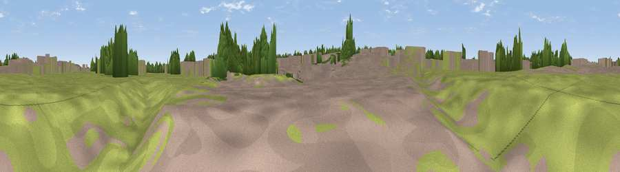

airplane take off viewing point
#45835 in England · top 97% of its area beats it · near Stroud GreenThe view, rendered

A 360° render of this exact spot computed from the terrain model, tree cover and land cover — summer colours, afternoon light, calibrated against photographs of famous viewpoints. Real trees, hedges and buildings will differ in detail.
The panorama
Grey silhouette: terrain skyline in each direction (720 bearings, Earth curvature and refraction included). Dashed green: skyline with trees (+15 m) and buildings (+8 m) as obstacles. Blue strip: how far the ground is visible on each bearing.
Where the view opens
Wedge length = distance to the farthest visible ground on that bearing (vegetation-aware). Rings at 10, 25 and 50 km.
What fills the view
37% built-up · 37% grassland · 23% woodland · 3% cropland
Angular shares of the visible panorama (visual magnitude), not map area. Landscape diversity 0.51 (0–1 Shannon).
Key numbers
More beautiful places nearby
The staircase of upgrades: each row has a higher view potential than everything closer. Driving times are estimates from straight-line distance, calibrated against real road routing — check an actual route before setting out.
| Place | Direction | Drive | Score |
|---|---|---|---|
| Viewpoint near Southend-on-Sea | SSE · 4 km | ~8 min | 39.8 |
| Viewpoint near Hadleigh | WSW · 6 km | ~12 min | 57.4 |
| Viewpoint near Hadleigh | WSW · 6 km | ~13 min | 61.0 |
| Viewpoint near South Benfleet | WSW · 8 km | ~15 min | 62.9 |
| Bluebell Hill | SSW · 29 km | ~45 min | 64.8 |
| Viewpoint near Boxley | SSW · 30 km | ~47 min | 65.4 |
| Viewpoint near Boxley | SSW · 30 km | ~47 min | 68.6 |
| Viewpoint near Westwell | SSE · 42 km | ~62 min | 72.2 |
51.56439, 0.68307 · source: osm viewpoint · position refined by local search. Computed location — check access rights before visiting.